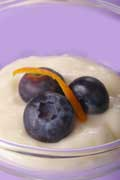

I love the tangy flavor of yogurt. I think it's delicious bothsweetened and plain and use it all the time as a substitute forsour cream. I would have guessed yogurt was hard to make, but I wassurprised ? there's really not much to it.
If you read the recipes, making yogurt sounds complicated, but infact, all you have to do is combine milk with a starter culture andkeep it warm. Then, you cool the mixture in the refrigerator andthere it is: Homemade yogurt!
We made yogurt at my house this weekend following a very simplerecipe. Here's how it works:
1. Start with milk.(We used a quart of organicmilk.)
Yogurt is a fermented food thought to have originated in Turkey.For centuries, people have made yogurt as a simple foodpreservation technique. Yogurt contains bacteria that producelactic acid, which helps prevent milk from spoiling, makes itthicker and produces the tangy taste.
Yogurt from cow's milk is what most of us in the United States areused to, but in other parts of the world it's often made with goator sheep milk. The nice thing about making your own yogurt is thatyou have complete control over what you use: goat's milk, skimmilk, organic milk or even raw milk. It's entirely up to you.
2.Control the Heat.(We put the milk in a pot on the stove,and used a candy thermometer to monitor thetemperature.)
The idea is to bring the temperature of the milk to just belowboiling (about 200 degrees F) and keep it there for about 10minutes. This kills any undesirable bacteria in the milk, and helpsit thicken. After it's been cooking for 10 minutes, you need tocool the milk to about 120 degrees F. We put our pot of milk in apan of cold water, using the candy thermometer to watch thetemperature.
This is just one way to do it. Many yogurt recipes recommend usinga double boiler instead of a regular pot. You can also buy a yogurtmaker, which sounds like a simpler way to get the temperatureright. Yogurt makers range in cost from about $15 to $50.
3. Add the Bacteria. (We used one-quarter cup of plainyogurt.)
Now you need to add the starter culture, which has the bacteriathat turns the milk into yogurt. That sounds hard to find, but it'snot. All you need is a little plain yogurt. Who knew? Yogurtcreates more yogurt.
You'll need to choose a brand with live cultures. (If you're notsure check the label.) The specific bacteria that make yogurt areLactobacillus bulgaricus and Streptococcusthermophilus.
4. Keep it Warm. (We put the warm mixture into a thermos tolet it incubate.)
Now you can sit back and let the bacteria work. The tricky part isthat the bacteria work best within a narrow range of temperatures ?it has to be between 100 and 130 degrees F ? so you need to find away to maintain a temperature of about 115 degrees F for at leastfour hours. Again, a yogurt maker might be handy because it wouldallow you to set the temperature, but there are numerous othermethods people use to produce the right temperature.
Some recipes suggest putting the yogurt in the oven with the lighton, or putting the yogurt in an insulated cooler. We decided to trya very simple method: Putting the yogurt in a thermos. We let itsit overnight, and then refrigerated it. Success! It tasted justlike store-bought yogurt.
5. Refine your Technique. (It's time to make moreyogurt!)
Although making yogurt is a pretty simple process, there's a lot ofroom for experimentation. You can add flavorings, such as sugar orvanilla; or thickeners, such as powdered milk or gelatin. If youlet it incubate longer, the flavor gets tangier.
Ready to try some yogurt on your own? Try these sites foryogurt-making tips, techniques and troubleshooting. We'd also liketo hear your tips for making yogurt. You can post them in ourcomments section.
University of Missouri Extension
http://muextension.missouri.edu/explore/hesguide/foodnut/gh1183.htm
National Center for Food Preservation
http://www.uga.edu/nchfp/publications/nchfp/factsheets/yogurt.html
|
 Homemade yogurt is delicious, and it's surprisingly easy to make. |
|
|